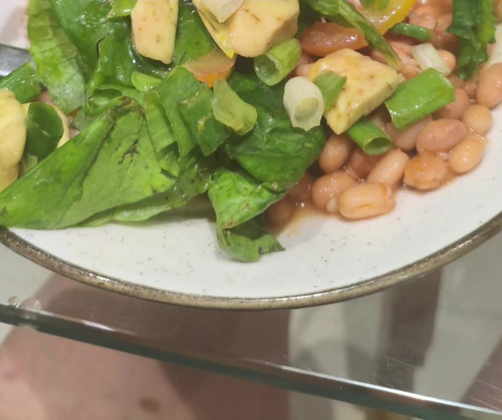

Início · Atendimentos · Emagrecimento com acompanhamento
Emagrecimento com acompanhamento.
“Te auxílio no Emagrecimento”, diz a bio dela no Instagram. Aqui está como esse acompanhamento costuma se organizar — com avaliação, plano feito para a sua rotina e retornos. Sem números prometidos: o plano é individual, definido na consulta.
Abordagem
Como ela trabalha
O ponto de partida não é uma dieta pronta, e sim a sua rotina: horários, trabalho, sono, o que você gosta de comer, o que já tentou e como anda a relação com a comida.
“Ofereço acompanhamento humanizado, com avaliação por bioimpedância e adipômetro, além de planos alimentares individualizados para ajudar cada pessoa a alcançar seus objetivos com segurança e equilíbrio.”
Perfil dela na Doctoralia, “Experiência” · ver a publicaçãoPrimeiro passo
A avaliação
Conversa
História, rotina, alimentação do dia a dia e objetivos.
Medidas
Peso, altura e circunferências, como ponto de partida do acompanhamento.
Composição corporal
Bioimpedância e adipômetro, que ela informa usar na avaliação.
Exames
Os exames recentes que você levar ajudam a completar o quadro.
As medidas servem para acompanhar o caminho. Nenhuma meta de peso é prometida neste site.
Sob medida
O plano alimentar
O plano é montado para caber na sua vida: refeições possíveis nos seus horários, alimentos que você encontra e gosta, substituições para não enjoar e ideias práticas para a semana.
“Avaliação muito boa e gerou um plano alimentar coerente com as observações e de fácil acesso”Guilherme R., avaliação no Google · ver na ficha

Continuidade
Os retornos
- O que aconteceuComo foi a semana, o que funcionou e o que ficou difícil.
- ReavaliaçãoMedidas e composição corporal, quando fizer sentido.
- AjustesO plano muda junto com a sua rotina.
- Próximo passoO intervalo até o próximo retorno é combinado caso a caso.
Com calma
Sem dieta da moda
- Sem cortar grupos inteiros de alimentos por conta própria.
- Sem cardápio copiado de outra pessoa.
- Sem prazo fixo: cada corpo e cada rotina têm o seu tempo.
- Com atenção à relação com a comida, que pesa tanto quanto o cardápio.
Dúvidas frequentes
Perguntas comuns
Em quanto tempo vou ver resultado?
Não há prazo que sirva para todos. O acompanhamento olha o seu caso e ajusta o plano nos retornos.
A consulta inclui bioimpedância?
Ela informa avaliação por bioimpedância e adipômetro. Confirme pelo WhatsApp como isso entra na sua consulta.
Vou passar fome?
O plano é pensado para a sua rotina e o seu apetite, e é ajustado nos retornos se algo não estiver funcionando.
Agende
Comece por uma conversa sobre a sua rotina.
Consultório na sala 301 do Empresarial Aa Center, Centro de Lauro de Freitas. Dia e horário combinados pelo WhatsApp (71) 99358-4094.